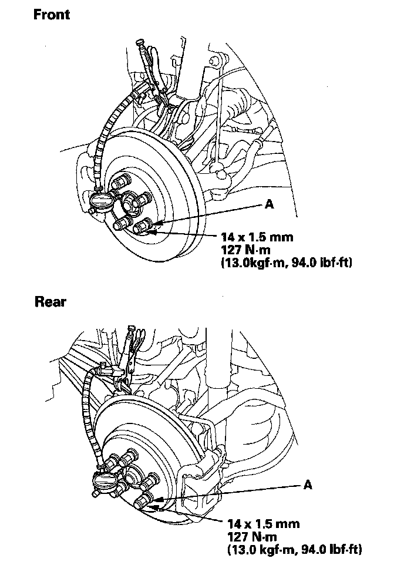

Wheel Bearing: Testing and Inspection
Wheel Bearing End Play Inspection1. Raise the vehicle, and support it with safety stands in the proper locations.
2. Remove the wheels.
3. Install suitable flat washers (A) and the wheel nuts. Tighten the nuts to the specified torque to hold the brake disc securely against the hub.

4. Attach the dial gauge. Place the dial gauge against the hub flange.
Front/Rear:
Standard: 0-0.05 mm (0-0.002 in.)
5. Measure the bearing end play by moving the disc inward and outward.
6. If the bearing end play measurement is more than the standard, replace the wheel bearing.